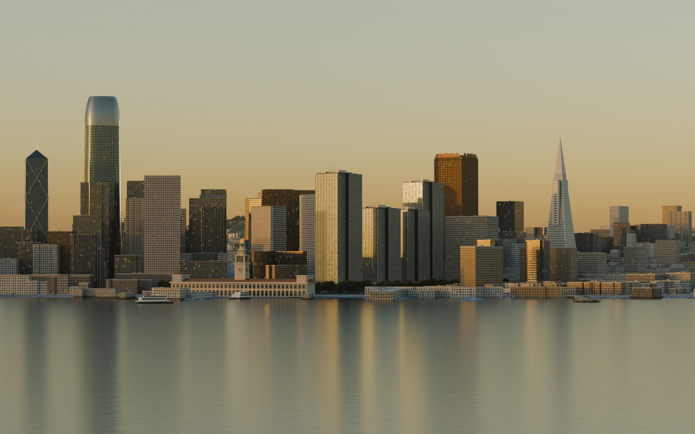
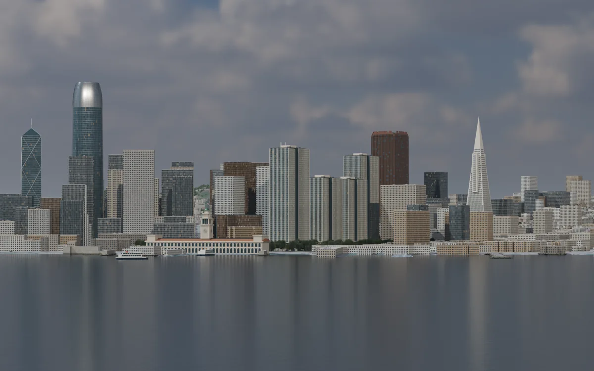
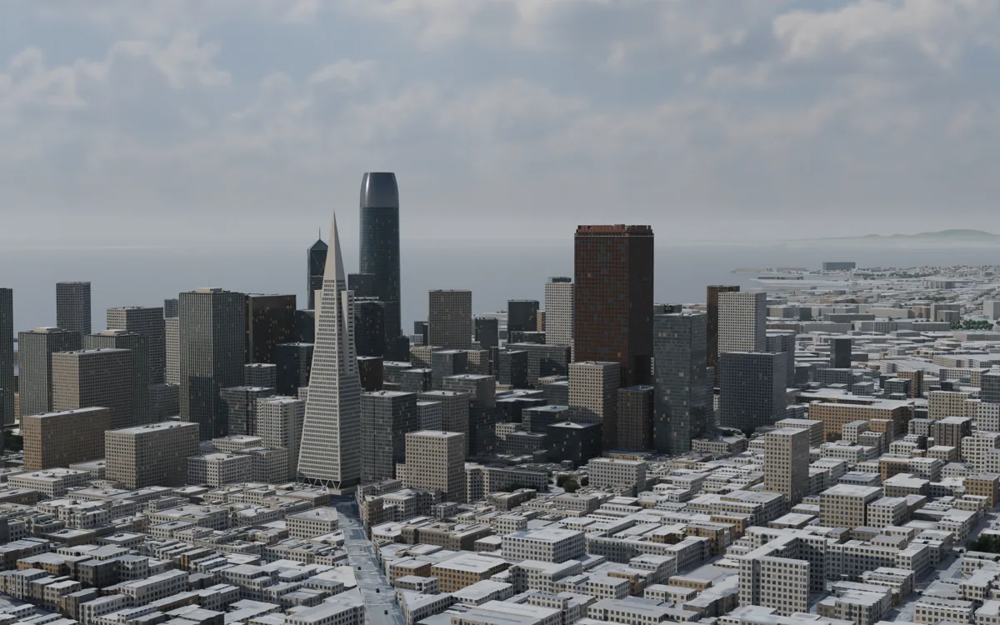
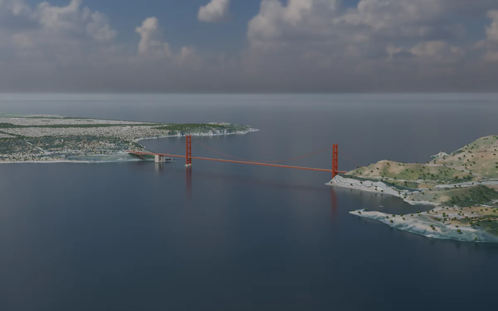
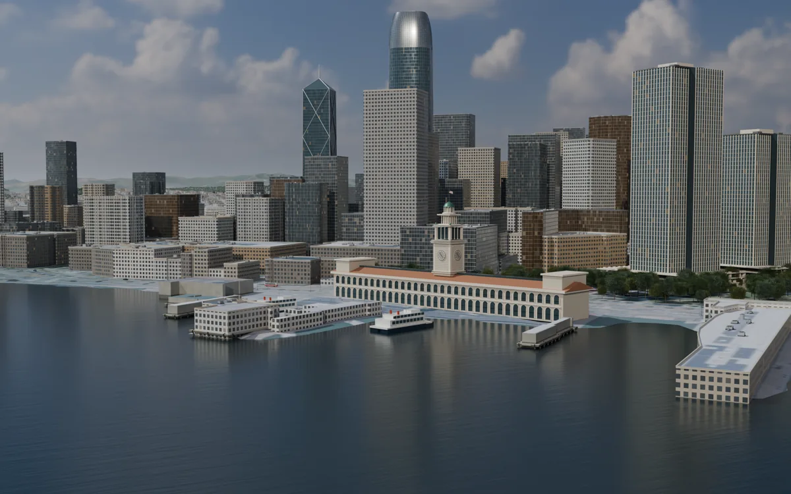
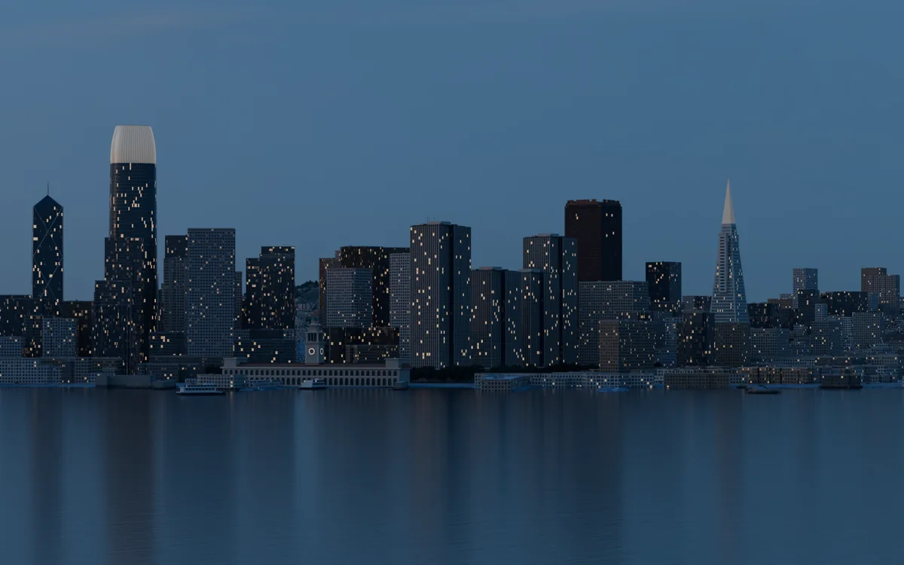
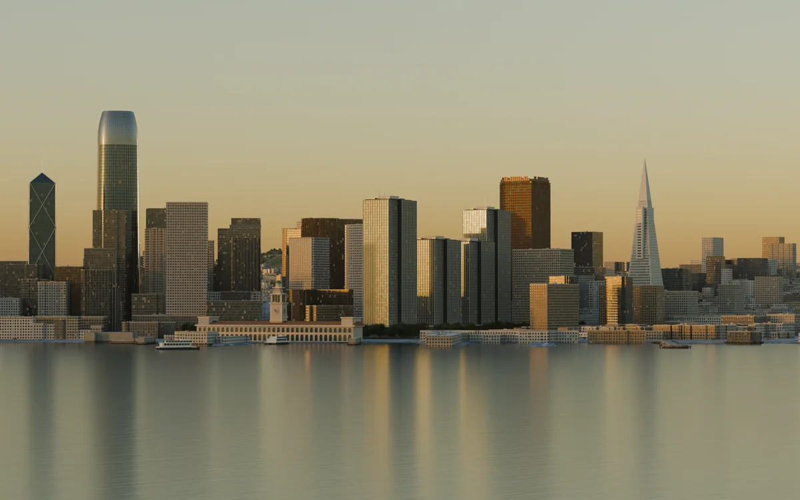
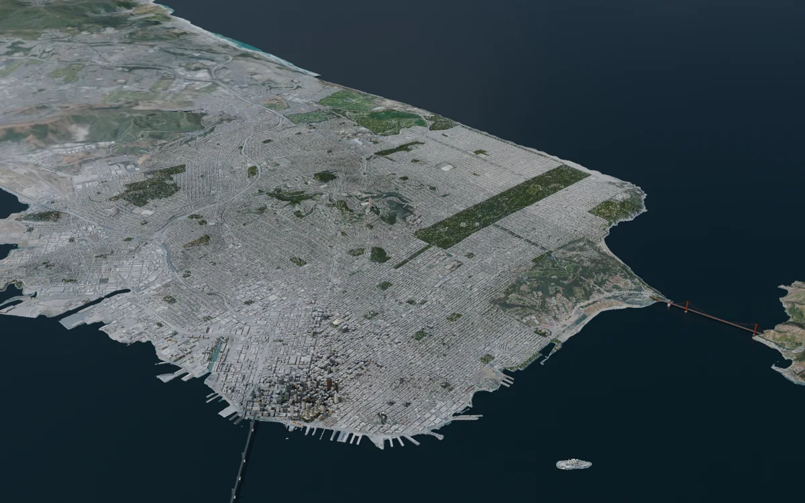

San Francisco.
A favorite city, rebuilt in three dimensions.
Find your way from the hills to the bay.

Explore,
your way.
Follow the waterfront. Find a familiar neighborhood. Move the sun, take the tour, or simply wander.

A whole city to explore. Loads 23 MB when you enter.
Changes the lighting in this interactive view.
Keep exploring the views
This device couldn’t open the 3D scene. The complete render gallery is still available.
Drag to orbit · Scroll to zoom · Select a landmark to discover it
The live city is a lighter version of the full Blender scene.
Seven views.
One city.
From the first light on the bay to the last windows downtown.












Drag or swipe to explore the collection. Select a view to open it.
A love letter,
built to scale.
San Francisco reconstructed in Blender, from the shape of its hills to the rhythm of its waterfront. A personal project, made to be explored.
- Building footprint records
- 177,023
- Vertices in the Blender scene
- 12.6 million
- Full-resolution views
- 7
Historic footprints, elevation data and aerial imagery provide the foundation. Landmarks, façades and street life add the interpretation.
This is an artistic reconstruction. Smaller façades and street details are approximate; the source datasets come from different dates.
Data and image credits
Building footprints, streets and parks: DataSF. Terrain: Mapzen / AWS Terrain Tiles. Ground and roof imagery: public-domain USGS / USDA NAIP.
Skies: Poly Haven’s Kloofendal 48d by Greg Zaal, sky edits by Jarod Guest, and Industrial Sunset 02, under CC0. All displayed city views were rendered from this Blender scene. Source and documentation.
Keep a piece
of the city.
The complete scene, its textures, and every finished view. Yours to explore and make your own.
Download the Blender scene 299 MB